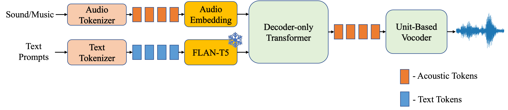

|paper|
Anonymous
Abstract. The fields of sound generation and music generation have seen notable advancements with the development of specialized models tailored to each domain. However, these domains share commonalities, and the use of specialized models can lead to increased hardware resource requirements. On the other hand, recent breakthroughs in large language models, particularly in natural language processing, have showcased their ability to capture complex patterns and generate coherent and contextually relevant outputs in various tasks. Leveraging the success of these language models, we present HarmonyLM, a unified framework designed to synthesize sound and music from discrete representations. HarmonyLM adopts a unified perspective in modeling sound and music, discrete tokens are modeled from text descriptions using a decoder-only model, which are converted back to harmonious and consistent audio outputs. HarmonyLM offers significant advantages as a unified sound and music generation framework. (1) Model Scalability: the model we use in acoustic modeling a decoder-only transformer, which is free to scale up model size. (2) Data Scalability: the acoustic modeling and reconstructing audio models do not require any annotations, which accommodate different scales of data. Experimental results demonstrate the effectiveness of HarmonyLM, as it achieves superior audio quality compared to competitive baseline models.

A high-level overview of HarmonyLM. We freeze the FLAN-T5 as our text encoder and use SoundStream as the audio tokenizer. The generated acoustic tokens by the autoregressive transformer are converted back to the raw sound/music with the unit-based vocoder.